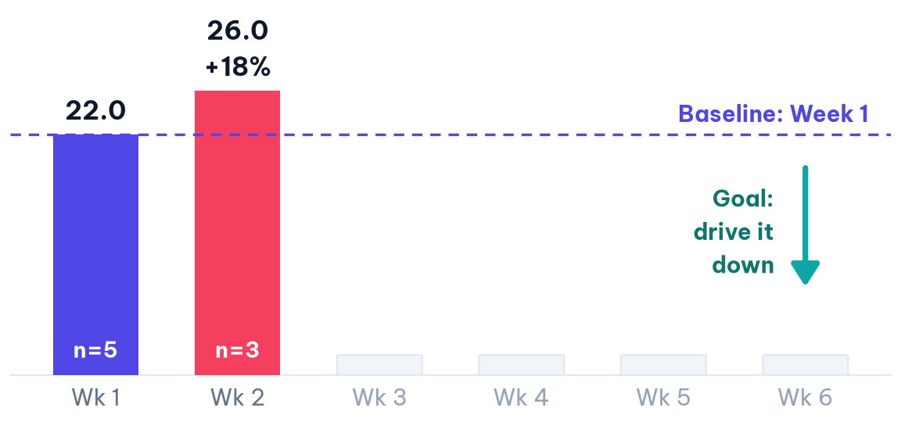
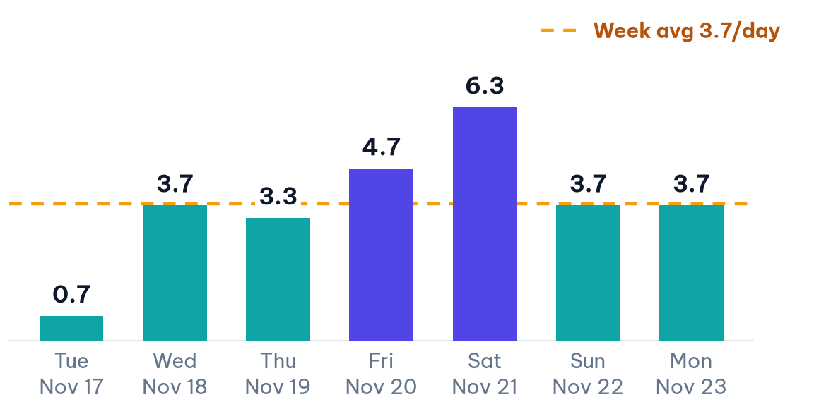
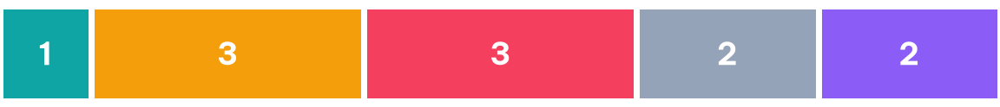

The Drinking Challenge · Weekly Report Week 2 Tue Nov 17 – Mon Nov 23, 2026 · group results only | Headline vs baseline: +18% vs Week 1 · lower is better ↓ |
|
Avg drinks / person 26.0 for the week · full-week reporters (n = 3) |
| Per day 3.7 avg drinks per person per day |
| On track 4 of 7 hit the goal or mostly did |
| Daily check-ins 38/63 60% of possible days |
| Full 7-day streaks 3 of 11 people logged every day |
| Questionnaires 0 of 9 weekly check-ins in |
|
|
| |
| |
| | Headline trend · lower is better ↓ Average drinks per person (full-week reporters only)  n = 3 of 11 participants reported all 7 days. This week: 26.0 (+18% vs Week 1). Baseline: 22.0. |
|
| | Day by day Average drinks per person, each day  | Above week average | At or below | Week average |
Same 3 full-week reporters each day. Sat was the peak (6.3); Tue was the lightest (0.7). Friday + Saturday made up 42% of the week. |
|
| | Goal status · group counts 4 of 7 on track this week  | Yes (1) | Mostly (3) | Not this week (3) |
| Not enough check-ins (2) | Exempt* (2) |
On track = Yes or Mostly, out of the 7 people who had enough check-ins and weren't exempt. Counts only. *Exempt = away or joined mid-week, never counted as a miss. |
|
| | Coming up Thanksgiving break Thanksgiving break: Tue Nov 24–Sun Nov 29 are off days with no scoring. Mon Nov 30 is the only day that counts for that week. Log your check-in that day and you've met the goal, whatever your drink count. A missed check-in doesn't count. Week 3 starts Tue Dec 1. |
|
| | Weekly questionnaire · group view How the week felt No weekly questionnaires this week. The group sleep, energy and mood view comes back when questionnaires come in. |
|
| | How it's counted Method notes Headline: total drinks logged Tue–Mon by people who checked in all 7 days and weren't exempt, divided by the number of those people (n = 3). Per-day bars average the same people. People with missed days aren't in the drink averages but still count toward check-in rates. Everything here is group-level. No individual results are shown. |
|
Next up: Thanksgiving break, then Week 3 on Tue Dec 1. Drinking Challenge · Tue Nov 17 – Mon Nov 23, 2026 |